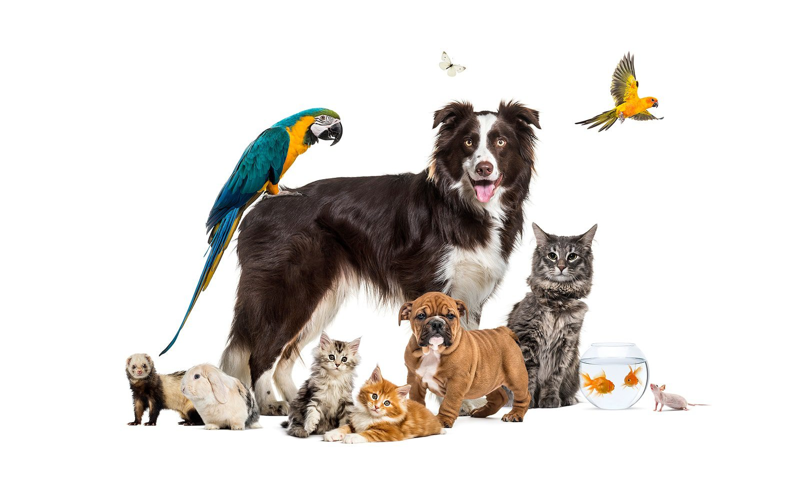

All About Pet Care: A Guide for Pet Owners
This page is dedicated to helping pet owners learn more about their beloved companions. Whether you have a dog, cat, bird, or small pet, you'll find helpful information here.
Dogs
Dogs are loyal, energetic, and loving companions. They thrive on exercise, training, and social interaction.
- Socialization: Regularly allowing your dog to interact with other people and animals is key to their development.
- Care essentials: Daily walks, a balanced diet, and regular vet visits are important factors which play a role in your dog's health.

Birds
Birds are intelligent and social pets that require stimulation and interaction. They can be trained to mimic sounds and enjoy flying space.
- Enrichment: Birds are highly social and need daily interaction. This can range from playing with them to simply talking to them.
- Care essentials: Make sure your bird has a spacious cage, fresh water, and safe toys to play with.

Small Pets
Small pets like hamsters, guinea pigs, and rabbits are gentle companions that need proper habitats and daily care.
- Proper Handling: Smaller pets are more fragile. Make sure to handle them with care.
- Care essentials: Clean cages, fresh food, safe bedding

General Care Tips
All pets need love, attention, and proper care. Here are some universal tips:
- Provide fresh food and water daily.
- Schedule regular veterinary checkups.
- Offer enrichment activities and toys.
- Ensure a safe and comfortable living environment.